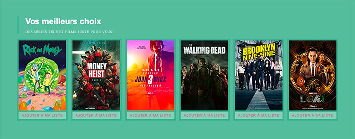

Pour cet exercice, vous allez créer une composante de de carte des meilleurs choix de films.
Aper√ßu du r√©sultat‚ÄØüëá

Matériel
Repo de départ
Installation
Créez un projet Vite et nommez le exercice-vite-films.
Faites aussi en sorte que votre projet Vite supporte SCSS puisque nous l'utiliserons dans les prochaines étapes. (Pour cet exercice, ne PAS compiler avec l'extention Live Sass Compiler).
Installez les dépendances NPM du projet dans un terminal grâce à la commande npm i
Démarrez la compilation du projet via la commande npm run dev.
Une page web devrait apparaitre à votre adresse http://localhost:3000 (le port peut-être différent de 3000, utilisez l'adresse qui vous est retournée dans le terminal lorsque vous avez fait la précédente commande.)
Prenez le dossier "partials" que vous venez de télécharger via le repertoire git ci-haut et placez le dans votre projet "vite".
Remplacez le contenu du body de la page html par le code suivant:
<section class="top-picks">
<div class="top-picks__header">
<h1 class="top-picks__title">Vos meilleurs choix</h1>
<p class="top-picks__desc">Des séries télé et films juste pour vous!</p>
</div>
<div class="top-picks__wrapper">
<div class="card">
<div class="card__media">
<img src="https://m.media-amazon.com/images/M/MV5BZjRjOTFkOTktZWUzMi00YzMyLThkMmYtMjEwNmQyNzliYTNmXkEyXkFqcGdeQXVyNzQ1ODk3MTQ@._V1_QL75_UX140_CR0,1,140,207_.jpg" class="card__image">
<div class="card__mask"></div>
</div>
<button class="card__btn">
Ajouter à ma liste
</button>
</div>
<div class="card">
<div class="card__media">
<img src="https://m.media-amazon.com/images/M/MV5BNDJkYzY3MzMtMGFhYi00MmQ4LWJkNTgtZGNiZWZmMTMxNzdlXkEyXkFqcGdeQXVyMTEyMjM2NDc2._V1_QL75_UX140_CR0,0,140,207_.jpg" class="card__image">
<div class="card__mask"></div>
</div>
<button class="card__btn">
Ajouter à ma liste
</button>
</div>
<div class="card">
<div class="card__media">
<img src="https://m.media-amazon.com/images/M/MV5BZjRkZWI5MDYtNWViNC00OWQ5LThkYzktZDU2NTQ4Zjk4NDMwXkEyXkFqcGdeQXVyNDIzMTQwODY@._V1_QL75_UX140_CR0,4,140,207_.jpg" class="card__image">
<div class="card__mask"></div>
</div>
<button class="card__btn">
Ajouter à ma liste
</button>
</div>
<div class="card">
<div class="card__media">
<img src="https://m.media-amazon.com/images/M/MV5BZmU5NTcwNjktODIwMi00ZmZkLTk4ZWUtYzVjZWQ5ZTZjN2RlXkEyXkFqcGdeQXVyMTkxNjUyNQ@@._V1_QL75_UX140_CR0,2,140,207_.jpg" class="card__image">
<div class="card__mask"></div>
</div>
<button class="card__btn">
Ajouter à ma liste
</button>
</div>
<div class="card">
<div class="card__media">
<img src="https://m.media-amazon.com/images/M/MV5BNzVkYWY4NzYtMWFlZi00YzkwLThhZDItZjcxYTU4ZTMzMDZmXkEyXkFqcGdeQXVyODUxOTU0OTg@._V1_QL75_UX140_CR0,0,140,207_.jpg" class="card__image">
<div class="card__mask"></div>
</div>
<button class="card__btn">
Ajouter à ma liste
</button>
</div>
<div class="card">
<div class="card__media">
<img src="https://m.media-amazon.com/images/M/MV5BNTkwOTE1ZDYtODQ3Yy00YTYwLTg0YWQtYmVkNmFjNGZlYmRiXkEyXkFqcGdeQXVyNTc4MjczMTM@._V1_QL75_UX140_CR0,0,140,207_.jpg" class="card__image">
<div class="card__mask"></div>
</div>
<button class="card__btn">
Ajouter à ma liste
</button>
</div>
</div>
</section>
Requis de cartes
Créez-vous une partial ayant pour but de gérer les styles des cartes de séries télé & films du projet. N'oubliez pas d'indiquer que votre fichier style.scss utilise cette partial, sinon aucune de vos modifications ne sera visible.
Ajoutez une couleur de fond correspondant à votre couleur primaire (primary) se trouvant dans votre partial _variables.scss.
Ajoutez une marge intérieure et extérieure de 5px à chaque carte.
Le bouton de la carte doit prendre toute la largeur de la carte, avoir une marge intérieure verticale de 5px ↕️ et ne pas avoir de bordure.
Utilisez le module de couleur de SASS afin de donner une couleur de fond 15% plus pâle que votre couleur primaire à votre bouton.
Au survol de votre bouton, faite en sorte que sa couleur de fond soit 25% plus pâle que votre couleur primaire.
Complétez le bouton en changeant sa couleur de texte de sorte qu'elle soit de la couleur complémentaire à la couleur primaire.
Utilisez la mixin "small-cap" se trouvant de le fichier _text.scss afin de faire afficher en petites majuscules le texte du bouton.
Requis top-picks
Changez la couleur de fond de cette section de sorte à ce qu'elle soit 5% plus pâle que votre couleur primaire.
Changez la couleur de texte dans l'entête de cette section afin qu'elle devienne blanche (vous n'avez pas à utiliser de variables pour cette partie).
Utilisez la mixin "small-cap" se trouvant de le fichier _text.scss afin de faire afficher en petites majuscules le texte de la description de cette section.
Modifiez la couleur de votre variable $primary et admirez l'impact sur votre page.
Requis Vite
Faites un build du projet afin de compresser le code et générer la dossier de distribution "dist".
Notes de cours‚ÄØüìö
Modules
Modulariser chaque composante en fichiers individuels
Vite
Outil qui améliore l'expérience de développement front-end.
NPM
Gestionnaire de paquets JS